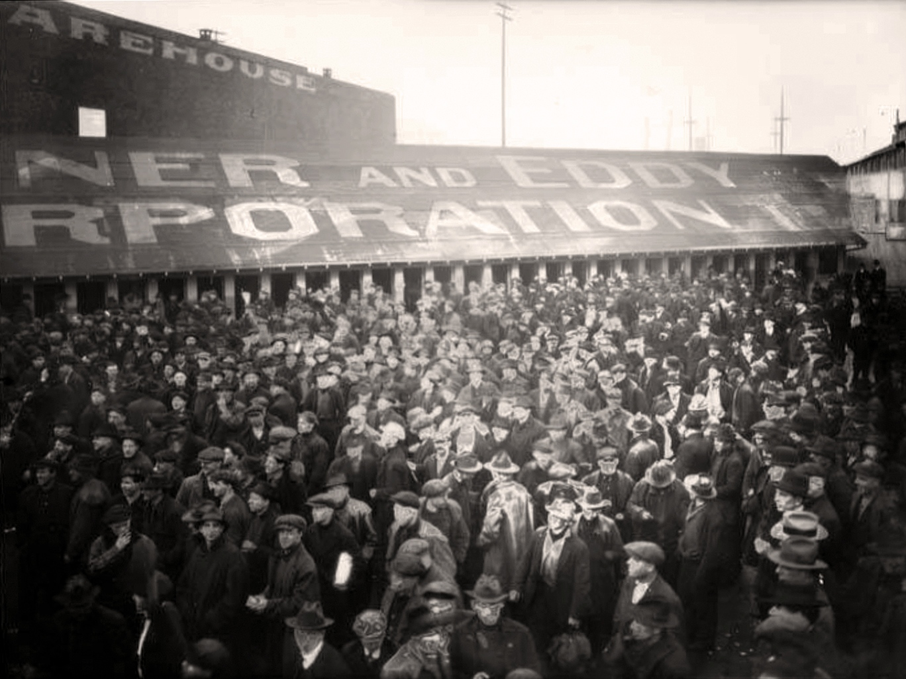

Mr. MagisterYour teacher
Today's Focus
How did fear change what Americans would accept in 1919 and after?
Americans hoped the end of the war would bring peace at home. Instead, 1919 brought fear: strikes, bombs, and revolution abroad. The Republic answered with raids, and then with a closed door.
Objectives
- I will be able to explain how strikes, bombings, and the Russian Revolution combined to produce the Red Scare of 1919 and 1920
- I will be able to evaluate the Palmer Raids against the republican ideal of law applied equally to all, and describe what ended the Scare
- I will be able to compare the arguments for and against the immigration quotas of 1921 and 1924
Quick Check-in
When people are afraid, what happens to the rules they are willing to accept?
?

Decide First

Put It in Order
How Much Did It Matter?
Verdict
Order and Equal Law
My Verdict
1.Judge either the Palmer Raids or the Immigration Act of 1924 against the idea of law applied the same way to everyone. Three to five sentences, with one fact from the book.
Pick one. Name the fact, then say whether the law treated everyone the same way.
My Notebook
Keep This in Mind
Both sides spoke in the name of the common good. They disagreed about who could be part of it.